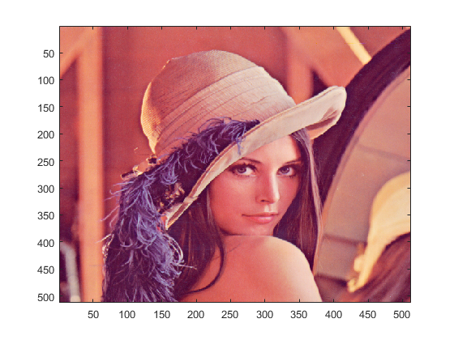
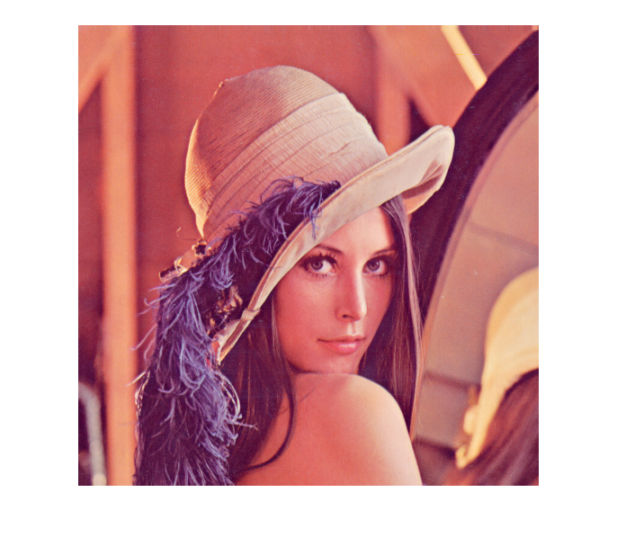
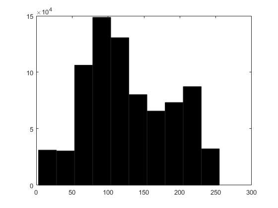
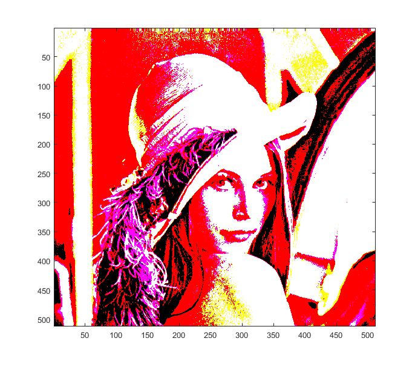
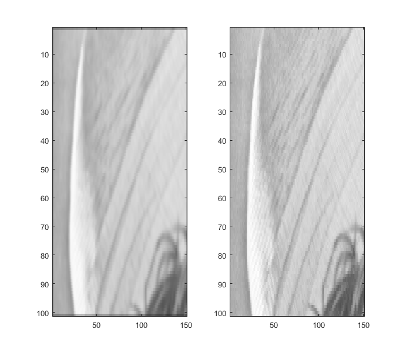

Contents
Working with Pictures
clear
Read image
Use double to receive double values, read image with imread !!! According to sample, double(imread('picture.tiff')) should be used. This doesn't work...
pic = imread('Lena.tiff');
Display image
figure(1);
subplot(1,1,1);
image(pic)
% colormap has no influence at all...
colormap(gray(256))
figure(2);
imshow(pic, []);
  Exampel Spektrumanalyse
Bild = double(imread('Lena.tiff'));
Vektor = Bild(:);
figure(1);
hist(Vektor,10);
X = Bild > 100;
Bild = Bild.*X;
figure(2);
image(Bild)
colormap(gray(256));
  Example Weichzeichner
Bild = double(imread('Lena.tiff'));
Auswahl = Bild(100:200,100:250);
FX = [1 2 1; 2 4 2; 1 2 1]
FX = FX ./ sum(FX(:))
Result = filter2(FX,Auswahl);
subplot(1,2,1); image(Result);
AuswahlOrig = Bild(100:200,100:250);
subplot(1,2,2); image(AuswahlOrig);
FX =
1 2 1
2 4 2
1 2 1
FX =
0.0625 0.1250 0.0625
0.1250 0.2500 0.1250
0.0625 0.1250 0.0625
